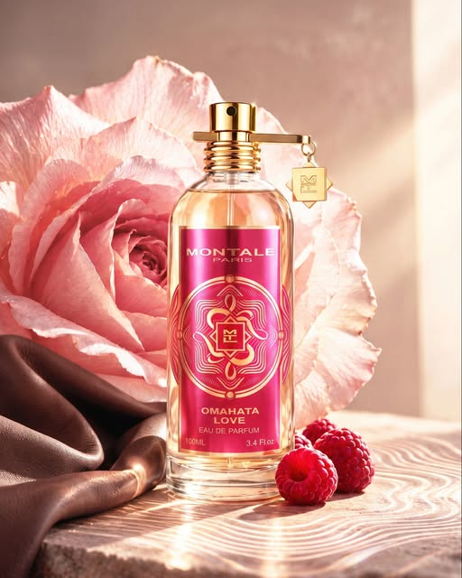
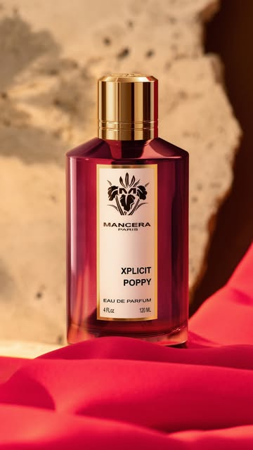

Featured project · Since 16 October 2026
Four accounts.
A voice for each brand.
I work as Community Manager at 5th Essence Square: proposing ideas, selecting and adapting brand assets, writing copy, publishing and managing four distinct communities.




+16.2%Organic follower growth · FISENCE
672 → 781 followers
From 19 October to 20 November 2026, FISENCE grew from 672 to 781 followers: 109 more people in the community. Organic growth, with content and community management entirely handled by me.
Content · Editing · Copy · Publishing · Community
View project →